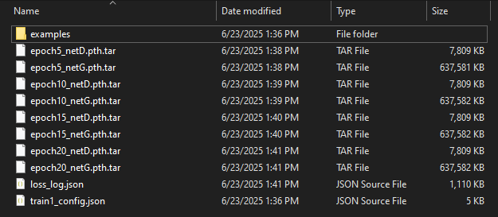
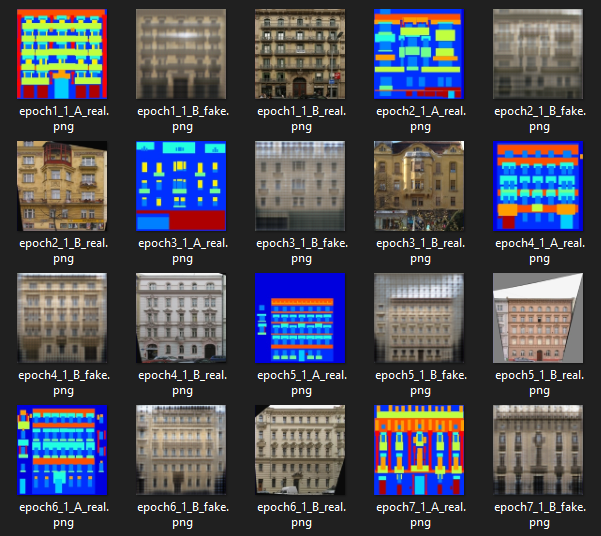

NectarGAN - Getting Started (Toolbox | Training)
A graphical tool for training and testing models, reviewing results of previous tests, converting models to ONNX and testing the resulting model, and processing dataset files, all packaged into a single modern and easy to use interface..
Reference: NectarGAN Toolbox Documentation
[!NOTE] This is part one of the three-part Toolbox quickstart guide.
Click here for part two.
Click here for part three.For instructions on how to install NectarGAN, please see here.
[!TIP] For this walkthrough, we will be using the ubiquitous
facadesPix2pix dataset, kindly provided by the University of California, Berkeley. If you would like to follow along using this dataset, please see here for information regarding the dataset download script which will allow you to automatically download this and other Pix2pix-style datasets.[!IMPORTANT] Currently, it is not possible to set the PyTorch target device from the Toolbox UI. The default is
cuda. If you intend to do your training on the CPU only, please first find the config file located atnectargan/config/default.jsonand set the value ofconfig.common.devicetocpu.This was an oversight and will be fixed in a future UI update.
Launching the ToolBox
With NectarGAN installed in your Python environment via your preferred method, you can launch the Nectargan Toolbox by running the following command inside of the Python environment where NectarGAN is installed:
nectargan-toolbox
Or, alternatively, by this command from the repository root (i.e. NectarGAN/):
python -m nectargan.start.toolbox
The Toolbox will open to a screen which looks like this:

Experiment Settings
Reference: Toolbox Experiment Panel
On this screen, we can define output settings for our current experiment, and also define architecture options for our generator and discriminator, if we so choose.
For now, we will:
1. Select an output root, either by pasting the path into the Output Root or by using the Browse button and selecting a directory with the file explorer. The output root is, as the name suggests, the root output directory, wherein a unique subdirectory will created for each experiment which is run.
2. Set an Experiment Name. This will be used to name the experiment output subdirectory. For now, we will set it to facades.
3. As we have no other versions yet, we will leave Version at 1, though it should be noted that Version is always kind of optional, as experiment outputs will be versioned automatically regardless.
Dataset Settings
Then, we will move on to Dataset options by clicking the blue Dataset button on the left hand bar. After doing so, you will be presented with a screen that looks like this:
 Here, you can control settings related to your dataset, including load and crop size, load direction, and a full suite of built in augmentation options. Clicking on the check box next to the augmentation type will expand the augmentation options for that type. The names are fairly self-explanatory, but just to be sure:
-
Here, you can control settings related to your dataset, including load and crop size, load direction, and a full suite of built in augmentation options. Clicking on the check box next to the augmentation type will expand the augmentation options for that type. The names are fairly self-explanatory, but just to be sure:
- Input : Augmentations applied only to the input image (A in AtoB, B in BtoA)
- Both : Augmentation applied to both the input and the target image.
For now, we will:
1. Unzip the facades dataset (twice), if we haven't already.
2. Set the Dataset Root to the path to the facades dataset folder.
[!IMPORTANT] The path we input for
Dataset Rootshould be the root directory for the dataset, i.e. the directory which contains thetrain,test, andvalsubdirectories. 3. If we look at one of our dataset images, we can see it has a resolution of[512x256], meaning each image (i.e.input,target) has a resolution of[256x256]. As such, we do not need to change ourLoad SizeorCrop Sizehere, as the default values are set to both load and random crop at256^2which, with this dataset, will just load images at full resolution and apply no cropping. 4. We will change theDirectiontoBtoA. Looking again at our dataset images, we can see that the image on the right, theBimage, is the semantic mask. We want to turn that in to the image on the left (A), the building facade image. If you'd rather see the model try to learn the semantic segmentation task instead though, feel free to leave it atAtoB.[!NOTE] A quick note on Pix2pix datasets, and their practical application in NectarGAN:
Looking at our
facadesdataset directory, we can see that it has three subdirectories:train,test, andval. This is standard for Pix2pix datasets, though the percentage splits vary based on a number of factors including model application and dataset size.NectarGAN uses these in a very standard way as well: | Set | Usage | | :---: | --- |
train| The images in this set are used during training to condition the generator and discriminator.val| The images in this set are used during training to generate example outputs. They provide a set of "clean data" which the generator has never seen, upon which to test the generator's inference capabilities.test| This set is optional. It is used during testing (addressed in the next section) as another "clean" dataset on which to test previously trained models.
Training Settings
And finally, we're ready to move on to the training settings, which can be done by clicking on the purple Training button on the left-hand bar. After doing so, you will be greeted with a window which looks like this:
 Here, you can set various options related to learning rate schedules for the generator and discriminator, settings related to loss weighting and logging, and also some options related to checkpoint and example image saving during training.
Here, you can set various options related to learning rate schedules for the generator and discriminator, settings related to loss weighting and logging, and also some options related to checkpoint and example image saving during training.
Also of note is the Continue Train checkbox. Clicking this will present you with the option to select an epoch to load, and then when you click train, the checkpoint file for that epoch will be loaded to continue model training.
For now, we don't need to change anything here. The default settings will initialize the learning rate schedule and loss weights as they were outlined in the original Pix2pix paper[^1], but you are encouraged to come back after this walkthrough to start playing around with the settings here, they can change the behaviour of the generator in lots of fun and interesting ways depending on the task.
Start Training
Toolbox training with the
facadesdataset (epoch 196).

So then with all that done, we are ready to start training! This can be done by clicking the Begin Training training button. When we do, a few things will happen:
1. The UI will lock. Most settings can't be changed during training with the exception of some in the main settings panel (accessed via the red Settings button on the left-hand bar.)
2. A new subdirectory will be created in the Output Root named {experiment_name}_v{version}.
3. In that subdirectory, a few things will be created: a loss_log.json, a train1_config.json, and a subdirectory called examples for exporting example images to during training.
4. We will be presented with two new buttons, Pause Training, to pause (and continue) training at any point, and Stop Training, which will stop training altogether and return the UI to its previous state.
5. After just a second, we will start seeing example output images, and losses will start being graphed. The rate at which these updates happen can be changed (even during training) in the main Settings panel.
6. After each epoch, the model will be loaded automatically in eval mode and run on an image from the val set, and an example image set will be exported to the examples directory in the experiment directory.
7. After a few epochs (5 if you have followed this guide exactly up until this point), cached loss data will be exported to the loss log.
And that's really all there is to training with the NectarGAN Toolbox. Let's let the model train for a bit (maybe 10 or 20 epochs, shown by the epoch counter in the bottom right), then we'll come back once we have some checkpoint files and example images to play with. When you are finished, just click the big red Stop Train button and the current train will be halted.
Output
If we have a quick look at our experiment output directory, we should see something like this: 
These are the files which have been created by our training session:
1. Every 5 epochs (based on our settings in the Training panel), two .pth.tar files were exported. These are tar archives containing the model parameters for the generator and discriminator respectively, as denoted by the G and D in the file names.
2. loss_log.json, a file containing all of the logged loss information (namely mean values and weights, both at float32).
3. train1_config.json, a carbon copy of the config that was used to run the training. Were we to continue training on the model, a new file, train2_config.json would be created.
4. A subdirectory called examples. Looking inside...

... we see that each epoch (at the end of the given epoch), we also were evaluating the model on images from the `eval` set, and then exporting the example [`A_real`, `B_fake`, `B_real`] set.
In a later section, we will see how we can use the Toolbox to load all of this data for review. For now though, since we have our .pth.tar checkpoint files, let's move on to...
Model Testing
Click here to proceed to the Toolbox testing quickstart guide.
[^1]: Pix2Pix: Image-to-Image Translation with Conditional Adversarial Networks (Isola et al., 2017)